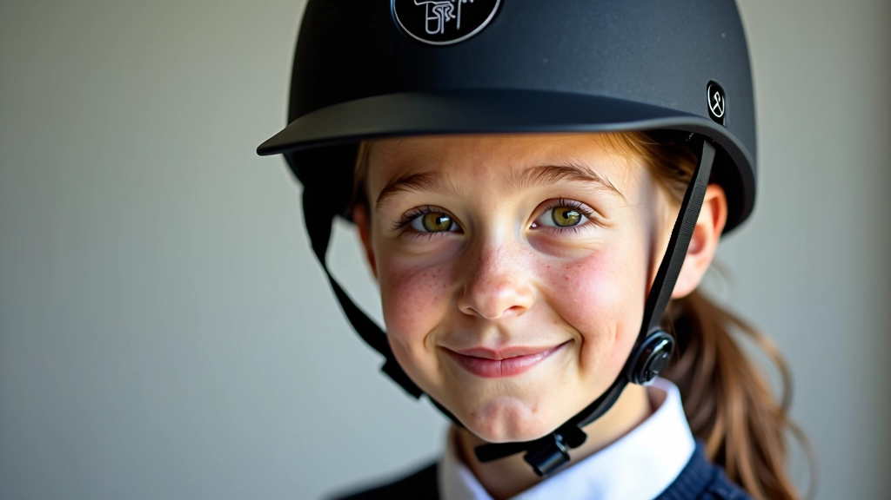
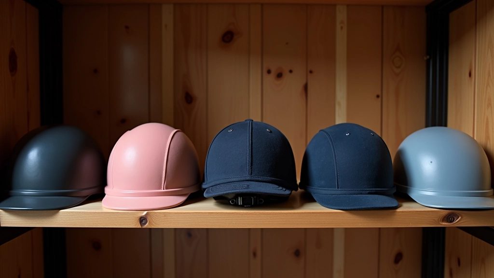
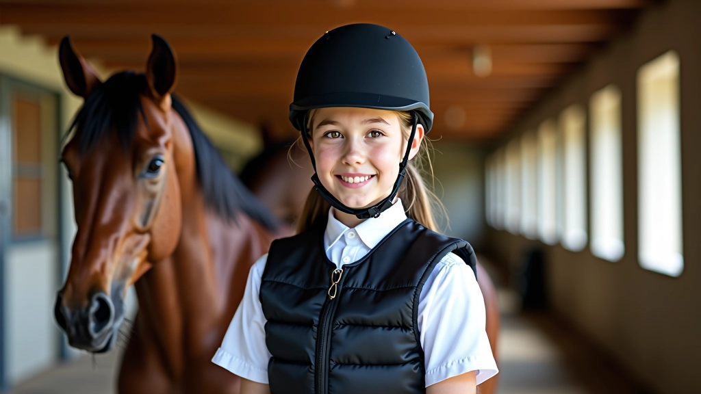
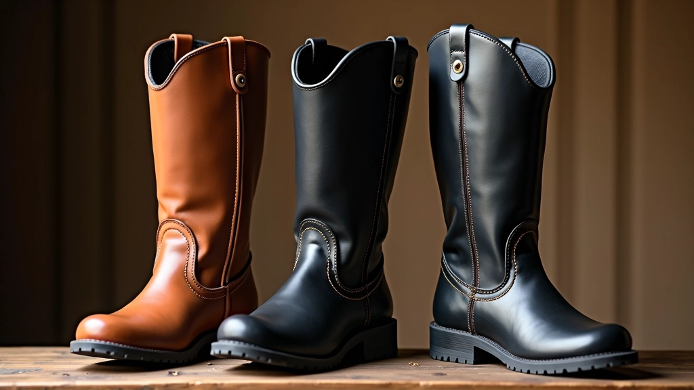
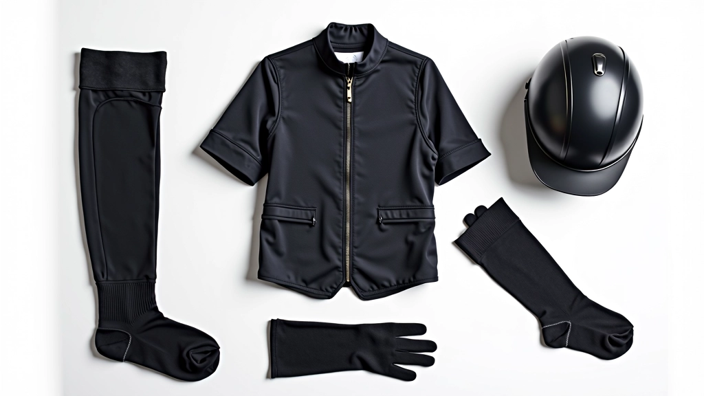

اختيار المعدات الواقية المناسبة
الحماية الصحيحة هي أساس الفروسية الآمنة. سواء كنت تبدأ للتو أو تطور مهاراتك، فإن اختيار المعدات الواقية المناسبة يحمي جسدك من الإصابات ويزيد من ثقتك في الحلقة التدريبية. هذا الدليل يوضح كل ما تحتاج معرفته عن الخوذة والسترة والحذاء والملابس الأخرى.

لماذا المعدات الواقية ضرورية؟
الفروسية رياضة جميلة لكنها تحمل مخاطر حقيقية. السقوط من الحصان يحدث حتى للفرسان المحترفين، والحماية الصحيحة تقلل من إصابات الرأس والعمود الفقري والعظام بشكل كبير. عندما تشعر بأنك محمي جيداً، تركز أكثر على الحركات والتقنيات بدلاً من القلق.
الخوذة وحدها تقلل من خطر إصابة الدماغ بنسبة تصل إلى 70 في المائة. السترة الواقية توزع قوة الضربة على مساحة أوسع من جسدك. الحذاء المناسب يضمن أن قدمك لن تنزلق من الركاب في حالة الطوارئ. كل قطعة لها دور محدد وحاسم.


اختيار الخوذة الصحيحة
الخوذة هي أهم قطعة حماية. ابحث عن خوذة بها شهادة أمان معترف بها — إما ASTM في الولايات المتحدة أو CE في أوروبا. هذه الشهادات تعني أن الخوذة اختبرت بشكل صارم لحماية رأسك.
معايير اختيار الخوذة:
- تناسب محكم دون ضغط على الجبين أو الخدين
- تغطي الجزء الخلفي من الرأس حتى قاعدة الجمجمة
- تهوية جيدة للراحة خلال الجلسات الطويلة
- وزن خفيف لا يسبب إرهاق الرقبة
- شريط تثبيت قابل للتعديل يبقى الخوذة في مكانها
لا تشتري خوذة مستعملة أبداً. الخوذة التي تعرضت لسقطة أو ضربة قد تكون ألياف داخلها قد تضررت حتى لو بدت سليمة من الخارج. خوذة جديدة تكلف حوالي 80 إلى 200 دولار — استثمار صغير لحماية رأسك.
السترة الواقية والحماية الإضافية
السترة الواقية (Body Protector) توفر حماية للصدر والعمود الفقري والأضلاع. إذا سقطت على الأرض أو اصطدمت بشيء، السترة تقلل من شدة الضربة. المبتدئون خاصة يسقطون أكثر، لذلك السترة خيار ذكي جداً.
السترات الحديثة خفيفة وسهلة الحركة. ابحث عن واحدة توفر حماية جيدة للعمود الفقري وتسمح بالحركة الطبيعية. يجب أن تكون مريحة بدرجة تجعلك ترتديها كل مرة دون تذمر. بعض السترات لها حماية إضافية للأكتاف والقفص الصدري — هذا مفيد خاصة للمبتدئين.


الحذاء المناسب يحافظ على قدميك آمنة
الحذاء الفروسي ليس مجرد موضة — له وظيفة أمان حقيقية. الحذاء الجيد يجب أن يكون له كعب محدد بارتفاع حوالي بوصة واحدة. هذا الكعب يمنع قدمك من الانزلاق للأمام من الركاب. إذا انزلقت قدمك من الركاب أثناء السقوط، يمكن أن تعلقي وتجري خلف الحصان — وهذا خطر جداً.
اختر حذاء بقاع ناعم من الجلد أو المطاط يمسك الركاب بشكل جيد. تجنب الأحذية الرياضية العادية أو الصنادل — لا توفر الحماية الكافية. أحذية الفروسية تتراوح من 60 إلى 300 دولار حسب النوع والجودة.
الملابس الأخرى وتفاصيل مهمة
بالإضافة إلى المعدات الأساسية، هناك تفاصيل صغيرة تحدث فرقاً كبيراً. البنطال يجب أن يكون من نسيج متين — السروال العادي يمزق بسهولة إذا سقطت. الجوارب الطويلة توفر حماية إضافية من الاحتكاك. قفازات الركوب تحسن الإمساك وتحمي يديك من البثور والجروح.
"الفرسان الحكماء لا يختارون المعدات بناءً على المظهر، بل على الحماية التي توفرها. المعدات الجيدة استثمار في صحتك وحياتك."
لا تنسَ الواقي الشمسي والنظارات الشمسية إذا كنت تركبين في الخارج. العيون المحمية من الشمس تقلل من إجهاد الرؤية وتساعدك على التركيز على الحركات.

نصائح عملية للعناية والصيانة
المعدات الجيدة تحتاج إلى عناية. افحص الخوذة قبل كل جلسة — تأكد من عدم وجود شقوق أو ضررها. اغسل السترة الواقية بانتظام لإزالة العرق والأوساخ التي قد تضعف الألياف. نظف حذاءك بعد الجلسة وافرك جزء السفلي بمنشفة رطبة لإزالة الأوساخ.
استبدل المعدات عندما تظهر عليها علامات تآكل واضحة. الخوذة التي عمرها أكثر من 5 سنوات قد تحتاج استبدال حتى لو بدت جيدة. الحماية الجيدة تستحق الاستثمار، والمعدات الجديدة تجعل الفروسية أكثر أماناً وراحة.
الخلاصة: الحماية أولاً
اختيار المعدات الواقية المناسبة ليس خياراً — إنه واجب تجاه نفسك وتجاه من يعتنون بك. الخوذة الجيدة تحمي رأسك من الإصابات الخطيرة. السترة الواقية توفر حماية لجسدك كله. الحذاء المناسب يبقيك آمناً في الركاب. كل قطعة معدات لها دور، وكل دور مهم.
ابدأ برحلة الفروسية بقرارات ذكية — اختر معدات موثوقة وآمنة، افحصها بانتظام، واعتن بها جيداً. هذا الاستثمار الصغير سيعطيك ثقة أكبر وتركيز أفضل على تطوير مهاراتك. الفروسية رياضة جميلة وآمنة عندما تحمي نفسك بشكل صحيح.
ملاحظة مهمة
هذا المقال يقدم معلومات تعليمية عامة عن المعدات الواقية للفروسية. المعايير والتوصيات قد تختلف حسب المنطقة والنادي والمستوى الذي تركبين فيه. تحدثي دائماً مع مدربك المحترف قبل شراء أي معدات، وتأكدي من أن كل المعدات تتوافق مع معايير السلامة المحلية والدولية. السلامة الشخصية مسؤوليتك، واختيارك للمعدات جزء أساسي من هذه المسؤولية.

فارس الأمان فريق التحرير
فريق التحرير
كتبه فريق تحرير فارس الأمان، متخصص في تقديم إرشادات عملية وموثوقة حول سلامة الفروسية للناشئين.
مقالات ذات صلة

تقنيات الجلوس والتوازن على الحصان
تعلم الطريقة الصحيحة للجلوس على الحصان والحفاظ على التوازن أثناء الحركة والتعامل مع الأوضاع المختلفة.

كيفية التعامل الآمن مع الحصان
قواعد التعامل الآمن مع الحصان قبل وبعد الركوب وكيفية بناء ثقة متبادلة بينك وبين الحصان.

أهم قواعس السلامة في الحلقة التدريبية
اكتشف القواعد الأساسية التي يجب اتباعها في حلقة التدريب لضمان سلامتك وسلامة الآخرين.